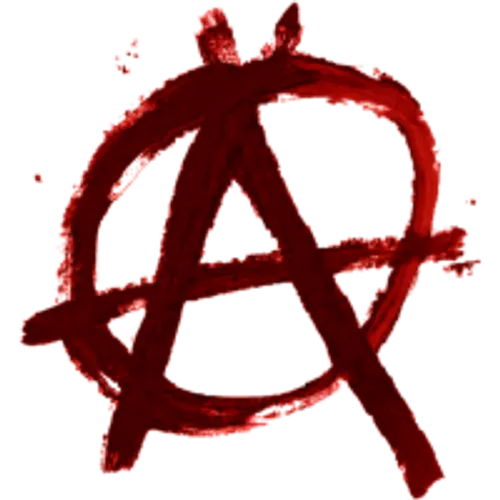
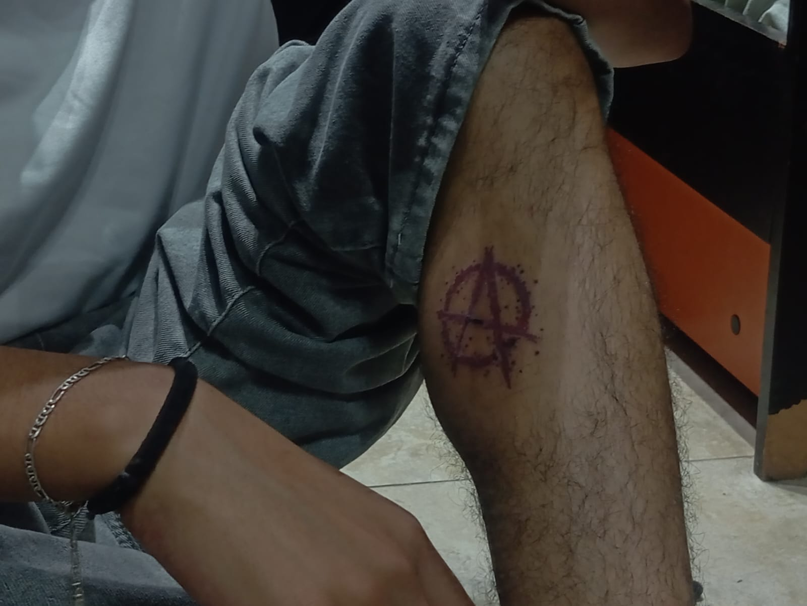

Hola!, no sé como te enteraste de la existencia de esta página pero aquí estamos
es increíble que cualquier persona pueda hacer una página web totalmente gratis y que cualquier persona lo pueda ver.
Yo estoy haciendo esto completamente solo y sin un peso, solamente con mi computadora e internet. Ayer mismo (7/7/26) me dió curiosidad
como hacer una página de internet por lo que empecé a descubrir como hacerlo poco a poco, y mira! resulto en algo... al menos...
Yo soy una persona que le gustan las matemáticas, la programación, la mecánica, física y esas cosas, ¿podrías adivinar que estudio?.
Soy mayor de edad y me gusta aprender nuevas cosas (que me interesen claro...), me gusta la música, escucho de todo un poco pero principalmente
un género que no sé como se llama, me atraen las cosas antiguas que por si solas demuestran misterio y peligro, me gustan los videojuegos,
la tecnología y cualquier tipo de ciencia. Tengo un estilo streetwear (Según yo, porque no sé si lo logro hacer así xd). Son un chico
sencillo que le gustaría salir más de casa y tener amigos más cercanos. A veces soy una hipócrita (Supongo que como todos en ciertas situaciones)
y asocial, me cuesta convivir con personas en general pero me gusta mucho el comportamiento de las personas y tratar de entender
sus diferentes puntos de vista. Quiero ganar mucho dinero, comprar un porche y vivir lejos del ruido excesivo.
Yo soy Ares y creo que es interesante el tener este registro de esta parte de mi vida :D
@Arezzz_ip ON IG
Un poco de mi vida que cualquiera puede ver y la red social que más uso.


@Arezzz_ip ON TWITTER
La red social de la política...
Yo estoy de acuerdo con en el anarquísmo


@Arezzz_ip ON ONLYFANS
¿Te gustaría comprar mi contenido?...
Adelante...


@Arezzz_ip ON GITHUB
La página que hizo posible este proyecto, nunca imaginé lo útil que es.


@Arezzz_ip ON SPOTIFY
Un poco de la música que escuho.
(aunque no pueden ver mis me gusta xd)
Wow, descubriste la clave?, quiéres saber más sobre mí?. Bueno, algunas cosas que no dije
es que estudio mecatrónica, Lo habías adivinado?. Me cosidero una persona inteligente,
no solo por tener buenas calificaciones, sino por la facilidad que me da para hacer las
cosas. Un tiempo estuve estudiando dos carreras al mismo tiempos, psicología y mecatrónica.
Trabajo actualmente (No sé de cuando sea esta nota) en un bar, soy de México me gustan
las alternativas. Constantemente me siento solo y no está tan chido xd
En realidad no
Sé que más podría escribir aquí, es muy raro hacer esto pero siento que algún día va a ser
interesante verlo después de mucho tiempo. Ammmm... agradezco mucho a los amiguitos que me
hicieron crearme un Instagram en la preparatoria porque ahora gracias a eso siempre
promociono @Arezzz_ip en todas mis redes sociales. Me gusta mucho Nicki Nicole, Pulo londra,
rorro, baby, lit killah... y esos sonidos más pop/electrónicos. Me gusta la fotografía
aunque no la practico profesionalmente o algo así, me gusta jugar básquetball y me gusta
mucho la carne roja.

